DCC 插件
DCC软件的插件也是客户端的重要组成部分。
目前我们提供了maya、nuke、houdini的插件。
对于其他软件的支持在后续的计划中。
Maya案例
菜单
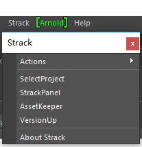
■ actions
注册在Strack系统上的maya的动作。
■ SelectProject
打开项目选择页面
■ StrackPanel
显示StrackPanel面板
■ AssetKeeper
打开AssetKeeper工具
■ VersionUp
打开提交version工具
SelectProject （项目选择）
通过项目选择页面，可以在DCC软件内部切换项目。

StrackPanel （主面板）
StrackPanel面板是DCC软件内部的strack操作面板，集任务、制作文件、version、publish于一身。
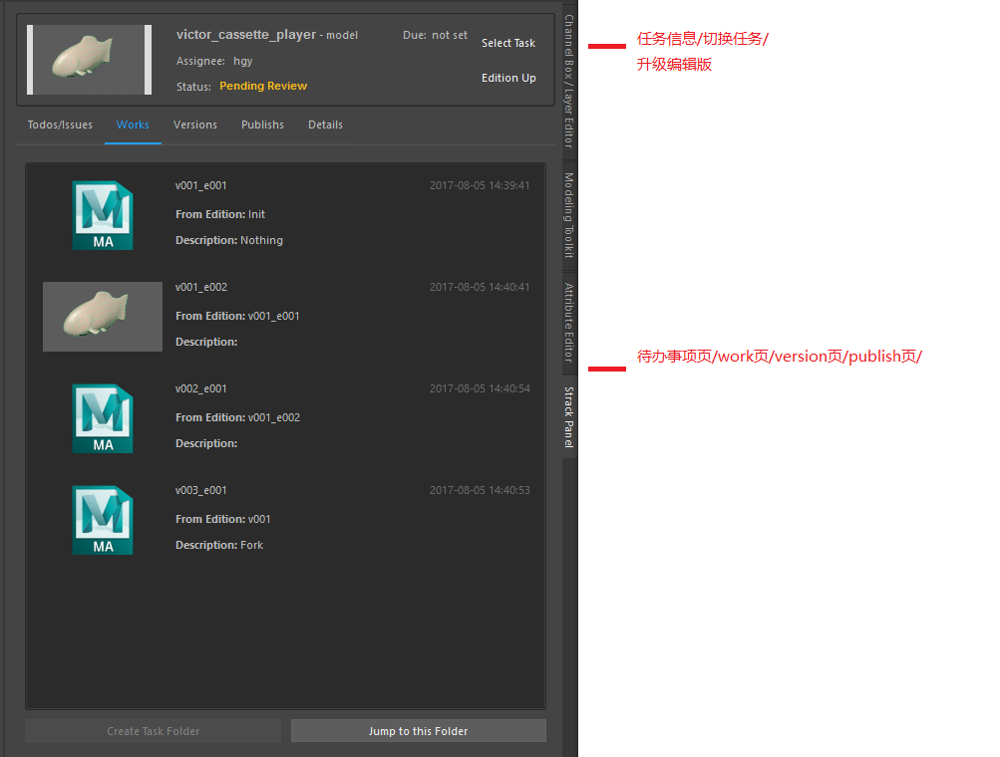
待办事项页
显示这条任务需要达到哪些要求。
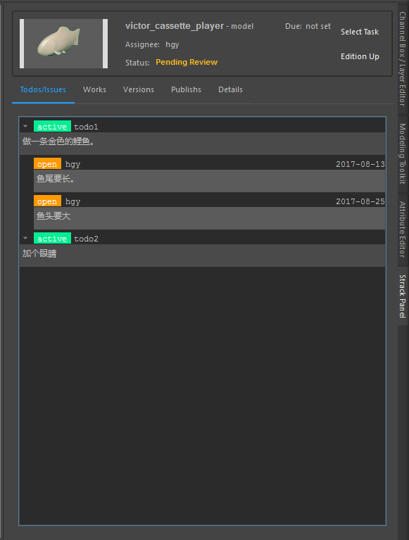
works页
显示当前任务制作文件的版本。
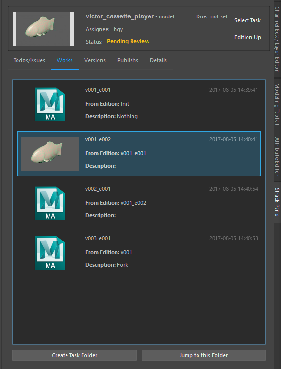
versions页
显示当前任务已经提交过的版本。
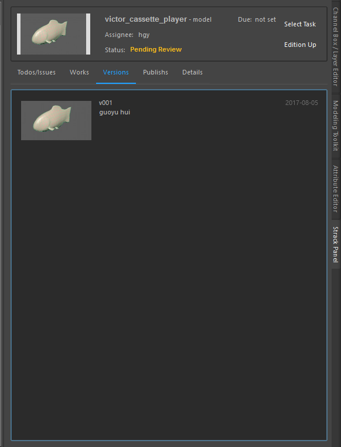
publishs页
显示当前任务已经发布过的文件。
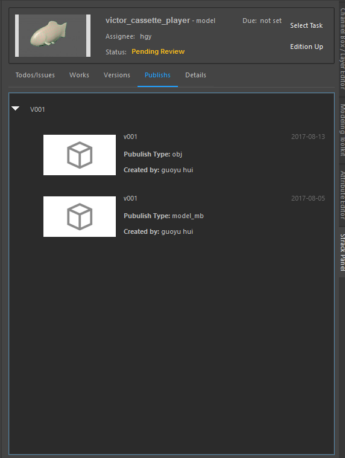
AssetKeeper （资产加载器）
通过AssetKeeper艺术家可以自由地获取到上下游的publish文件，并将其组装到自己的文件中。
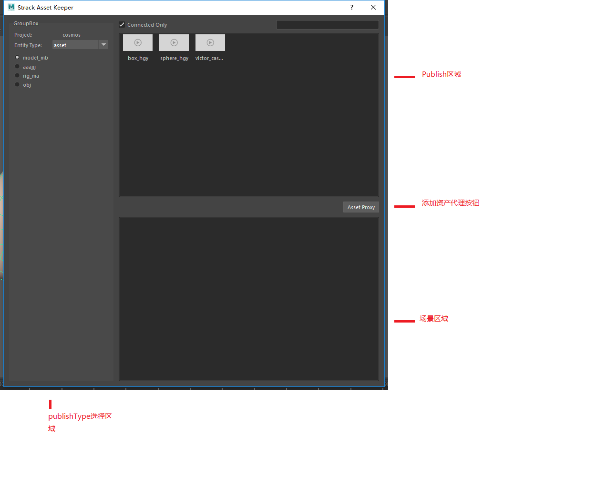
使用方法
-
选择实体类别和publishType，在右侧publish区域会显示符合条件的publish文件
-
将要添加到场景中的publish文件从拖拽到下方的场景区域， 同时触发导入hook，选择想要的导入方式，成功将实体导入到场景中。
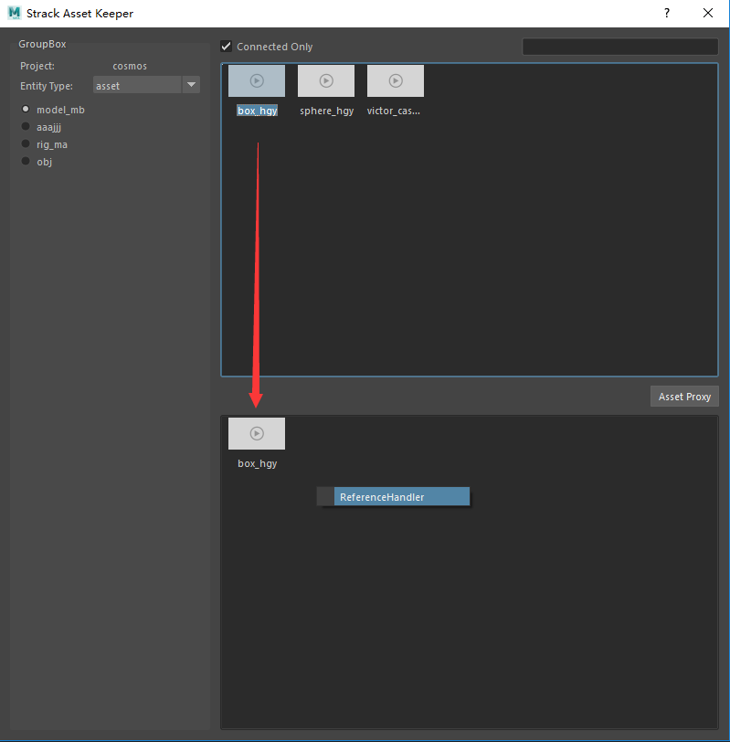
- 在场景区域的实体上右键，可以切换版本(如需其他功能，可以自行添加新的hook)。
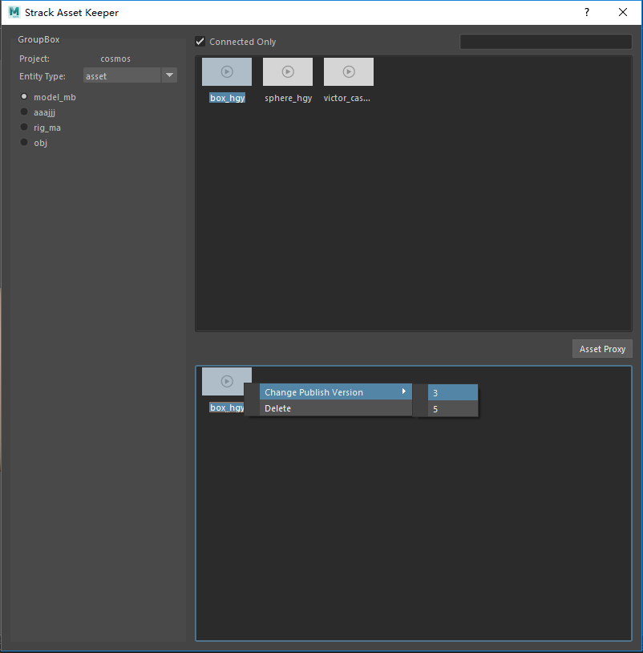
-
想要将实体从场景中移除，可以通过右键菜单中的Delete项进行删除。或者按键盘上的delete键也可以实现这个效果。
-
AssetProxy按钮(未实装)
EditionUp （升级编辑版本）
使用EditionUp对制作文件进行编辑版升级。
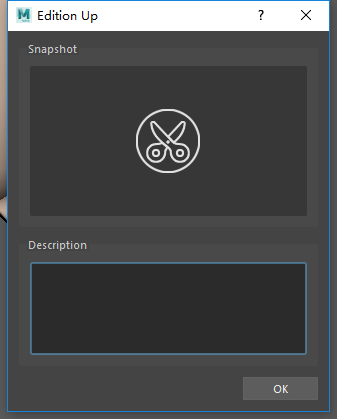
使用方法
1.在StrackPanel顶部点击EditionUp按钮，弹出对话框。
2.点击Snapshot的剪刀图案，进行截图。
3.在Description区域填写描述。
4.点击OK按钮，完成制作文件编辑版的升级。
VersionUp （升级版本）
通过使用VersionUp工具，在经过自检之后，提交版本。
自检页面

VersionUp页面
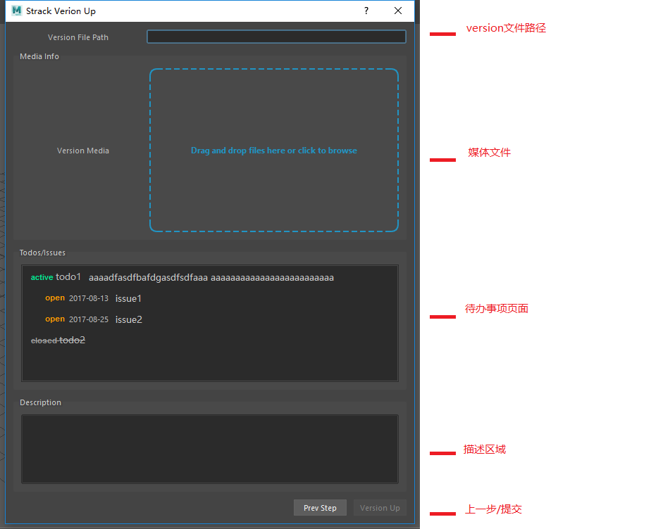
使用方法
-
点击菜单，弹出工具，首先是会出现自检页面。
-
通过全部自检项或者跳过后，点击下一步按钮跳转到VersionUp页面。
-
根据选中的工作文件的Edition会自动填写VersionFilePath。
-
拖拽需要审核的媒体文件到MediaInfo区域。
-
选中此次提交完成了哪些todo和Issue。
-
在Description区域填写描述。
-
点击VersionUp按钮提交新的版本到Strack系统上。
StrackPublish （发布版本）
通过publish工具创建publish信息并发布文件。
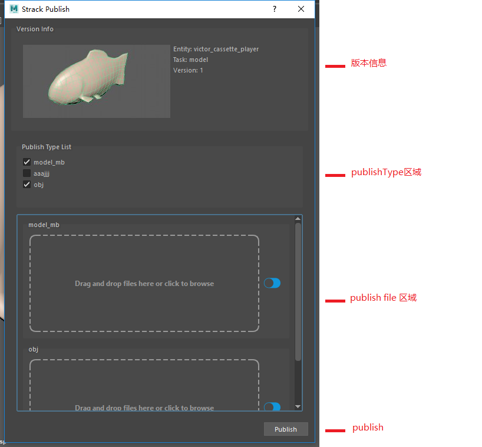
使用方法
- 在StrackPanel的versions页，右键任意版本，选择publish，弹出publish工具。
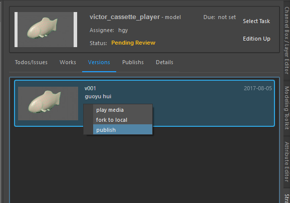
-
选择想要发布的publishType。
-
将对应文件拖拽到对应的区域内。
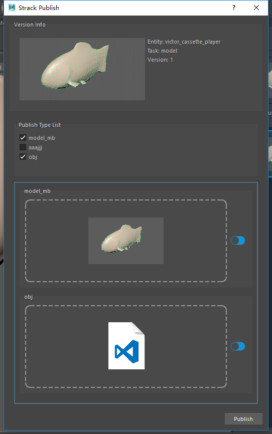
- 点击Publish按钮，进行发布。发布成功后，可以在Strack系统上进行查看。AssetKeeper也将读取到新的发布内容。
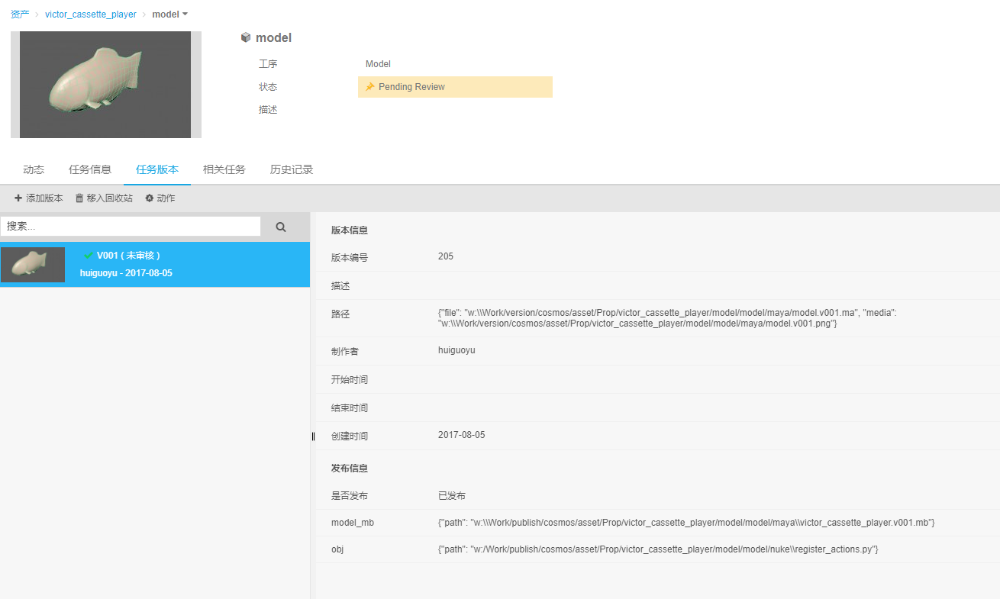